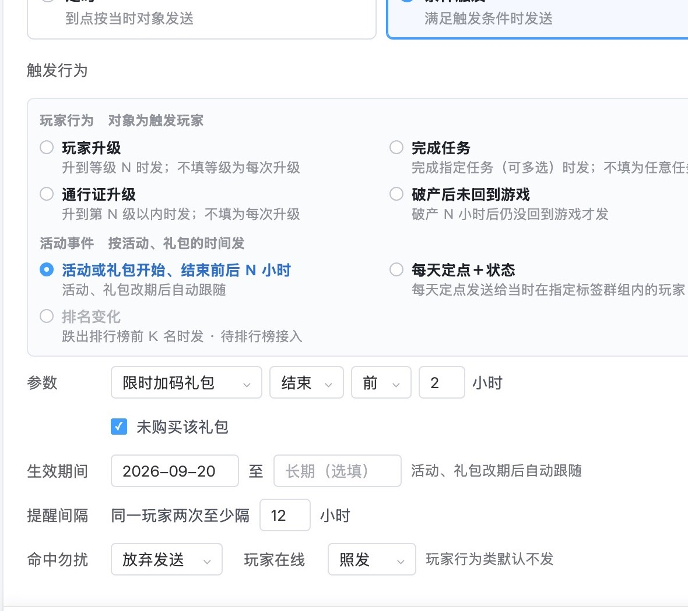
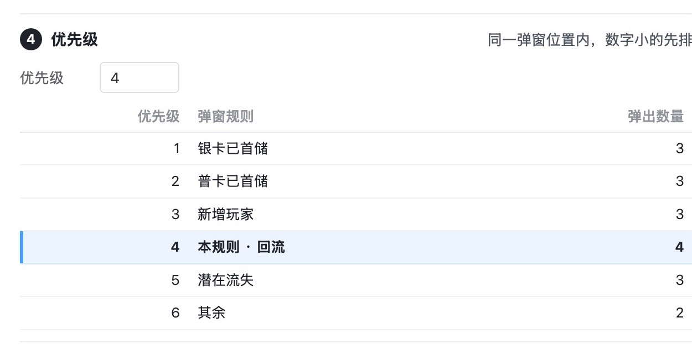
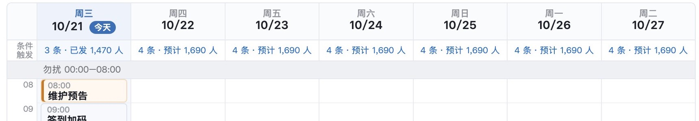

判断标准：一个功能谁用、多久用一次、不做时人工怎么办、研发要做多大。研发量是推断，参考了 10/20 的成本收益评估。其中 3 处那份评估当时就建议简化，定稿里没有落实；我不确定是不是你否过，所以一并列出。你 10/28 定了全部照改，01–04 节已改进评审版。
| 功能 | 为什么减 | 减了以后 |
|---|---|---|
| 条件触发「命中勿扰时顺延」 第 2 页 | 要做延后队列，到勿扰结束再重判条件和上限，礼包可能已过期。10/20 评估研发量为大，用得少 | 条件触发命中勿扰一律放弃，错过一次提醒。定时推送的整条顺延保留 |
| 弹窗记录「每次进大厅都记一行，展开看其他规则和没轮到的原因」 第 10 页 | 玩家每进一次大厅，都要存所有规则的判定结果，量最大。10/20 评估只要求看每个弹窗弹没弹（当时已评为研发量大），后来又加上了没弹的进入和其他规则 | 只记实际弹出的那几次，展开看每个弹窗弹没弹。没弹的原因用「下一次进入」的实时判定看，玩家查询和按玩家预览都有 |
| 快显的「破产后未回到游戏」触发 第 5 页 | 快显只给在线玩家看，玩家破产后不在线，只能为它单开一个 24 小时的等待窗口，是全文唯一的例外 | 这个场景由推播负责，第 2 页已有同名触发；快显的其余触发不变 |
| 功能 | 为什么减 | 减了以后 |
|---|---|---|
| 「每天定点＋状态」触发 第 2 页 | 和定时的「每天重复」是同一件事：每天几点发给当时在某个群组里的人。为了区分，规则得另写一条，它还不进日历、不预留名额，成了名额计算的例外。你 10/20 说过「两个重复的肯定要把不通用的那个删了」 | 用定时每天重复；重复的期限从 90 天放宽到不限，长期的也能配 |
| 服务通知的勿扰设置（「修改」里可改为照发） 第 1 页 | 10/20 评估：运营负责人基本不会改，建议删掉下拉，固定下来 | 固定为：服务通知遇勿扰顺延，账号安全通知照发。「修改」对话框少一行 |
| 提醒间隔可填小时数 第 2 页 | 10/20 评估：运营不会改默认。按小时算，「完成每日任务」这类每天一次的提醒，第二天早一点完成就会被跳过 | 固定为同一条推送每人每天最多 1 次，按自然日算，不可配 |
| 规则里单个弹窗的「暂停」 第 4 页 | 规则可整条暂停，内容可下架，再加一层单处暂停，就多出「引用状态」：列表里要标灰字，内容页要多一列。只停一处的情况很少 | 要停某条规则里的某个弹窗，就从这条规则里移除，以后再加回来 |
| 编辑页里的优先级输入框和 6 条规则表 第 4 页 | 优先级在列表里拖动也能改，两处改同一个值，还要规定填了已占用的数字怎么顺移。这一节约占编辑页的四分之一 | 优先级只在列表里拖动改；编辑页右侧摘要只读写「优先级 4 / 6」 |
| 「两种方式对比」对话框 第 4 页 | 后台里专门做一张图解页，只是为了教运营。命中方式旁边已经有一句说明 | 删掉对话框，评审版少一张图；两种方式的区别写在业务规则里 |



其余界面这几轮已经统一过：颜色、表格、状态计数、操作列、筛选区都是一套写法，没有再要改的。
| 减什么 | 要改的图 | 要改的规则 |
|---|---|---|
| 01 研发重的 3 处 | 03（命中勿扰一行）、17（触发行为少一项）、19（收到记录里没弹的那次进入删掉） | 第 2 页「勿扰与在线」两条，第 5 页「发送时间」一句，第 10 页「收到记录」一句 |
| 02 多概念的 6 处 | 03、17（触发行为少一项、提醒间隔一行）、02h（少一行）、10、10d、11（去掉暂停与优先级一节）、10a、10c2（去掉已暂停标注与引用状态列）；删 10k | 第 1 页「上限与勿扰」，第 2 页「触发与对象」「提醒间隔」，第 4 页「列表」「优先级」「命中方式」各改一两句 |
| 04 观感 | 00、02a（顺延改灰、图例分两项） | 第 1 页「日历」一句 |
建议 01、02、04 一起做：都是删东西，不加新概念，评审版会更短。03 的两处你说要就顺手做。
改完后请一位没看过上下文的人重查。被删的东西在图、规则、数据页里都没有残留，4 个运营场景都能走通。删了以后出现的空档和矛盾如下，都已补上：
| 空档或矛盾 | 补成什么 |
|---|---|
| 删了「每天定点」，靠定时每天重复，但没写它在列表、日历、数据里怎么显示 | 列表占一行，写「每周六 · 第 1/10 次」这样的重复方式与次数，发送列写累计；日历每次都画；某一次失败只算那一次 |
| 条件触发的服务通知遇勿扰：一处写放弃，一处写顺延 | 服务通知不论定时还是条件触发都顺延，账号安全照发；账号安全通知从哪个系统发，列进待研发确认 |
| 玩家查询缺「iOS 旧版本无到达回执」「结果不明」，单条数据里这两类约占发送的 12% | 推播、短信的结果补上这两种 |
| 被引用的弹窗内容不能下架，要停一个内容得逐条规则移除；活动结束后内容怎么办没写 | 内容可直接下架，各规则里自动跳过；对应活动未开始或已结束时也自动跳过 |
| 优先级最高的位置上，新规则排在最后，可能永远命中不到 | 保存并上架时提示排第几、会不会被前面的规则挡住 |
| 轮流位置的漏弹提示会让人以为要把内容放进全部规则 | 改成按人数提示：「回流 16,564 人里有 2,140 人同时符合其他规则，那一次可能轮不到」 |
| 删了弹窗的逐次记录，但漏斗仍要按次统计；「原因看实时判定」会让客服拿今天的判定解释昨天 | 写明服务端按次记录只用于统计、不进玩家查询；过去某次为什么没弹查不到 |
| 示例：「银卡已首储」的玩家弹「首储礼包」，一看就会被问 | 内容改名「储值优惠礼包」 |
| 短信「今明两天名额」是全文唯一的进度条，条长含义没写 | 改成和推播日历下方一样的两行文字 |
| 截图底部被截：浏览器可视区比窗口矮约 87 像素，高图底部会丢，每人每天推送量的改动清单就没了 | 截图脚本已修，34 张全部重截 |
分析/功能成本收益_1020.md（第 2.14、2.16、3.2、12.6 条）· 类型卡「两个重复的肯定要把不通用的那个删了」